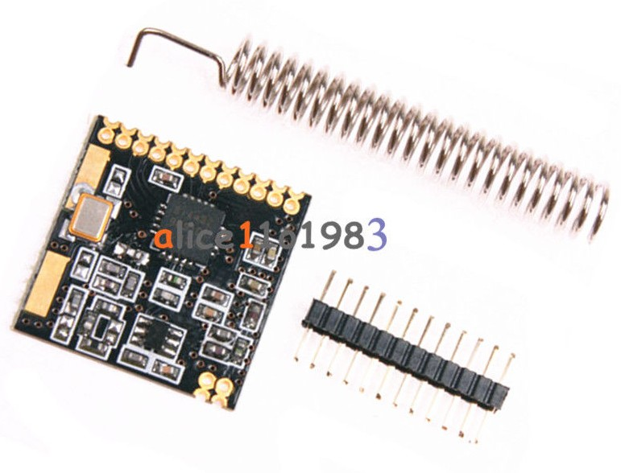

SI4432 Transceiver
I bought this transceiver some time ago on eBay. It supports FSK and OOK transmission, and as transmitter and received are together in one package I expected some advantages compared to the traditional 433MHz transmitters and receivers that I used until now.

Specifications provided on Ebay:
Ultra-thin small
Harmonic notes passed FCC/CE certification
Strong ability to penetrate
Ses the American SI4432 the latest version of IC, stable performance
Frequency range: 433.92M
High sensitivity up to -121dBm
Maximum output power: 20dBm
Data transfer rate: 0.123-256kbps
FSK, GFSK and OOK modulation mode
1.8-3.6 V power supply
Ultra low power off mode
The digital received signal strength indicator (RSSI)
Timing wake-up function
Automatic antenna matching and bidirectional switch control
Configurable data packet structure
Before the synchronization signal detection
64 bytes RX data register (FIFO)
Low power testing
Temperature sensing and 8 bit analog to digital converter
Operating temperature range: -20 ~ +60 C
Integrated voltage regulator
Frequency hopping
Power on reset function
Built in lens adjustment function
Pin definitions:

1 CND power supply
2 GPIO0 internal module, launch control foot
3 GPI01 internal access module to accept control foot
4 GPIO2 directly connected to the chip GIIO2 pin
5 VCC positive supply 3.3V
6 SDO 0-VDD V digital output provides a serial readback function of the internal control register
7 SDI serial data input. 0-VDD V digital input, this pin for 4-wire serial data clock function
8 SCLK serial clock input. 0-VDDV last month set of inputs. This pin provides a 4-wire serial data clock function
9 NSEL serial interface select input pin,0-VDDV digital input. This pin to 4-wire serial data bus select / enable function, this signal is also used, said the burst read / write mode.
10 NIRQ interrupt output pin
11 SDN Close the input pin. Input 0-VDDV digital. SDN = 0 in shutdown mode, so mode
12 GND access power ground
13 ANT 50 ohm coaxial antenna
Download